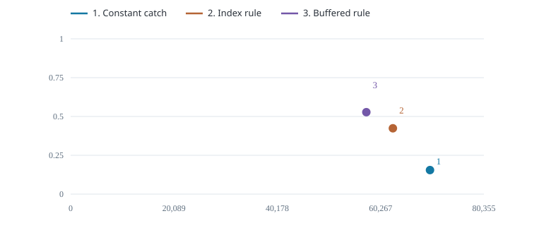
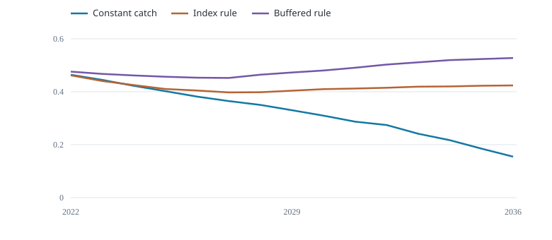

Compare catch, stock condition and catch stability under the same trials.
Catch and final biomass

Mean annual realised catch (tonnes); y: median final B / K
Biomass through time

Median end-of-year B / K
Each point is one rule’s saved mean catch and median final biomass. The comparison shows trade-offs and does not rank the rules.
| Management rule | Mean catch (t/year) | Final B / K | Trials below 0.2 (%) | Catch change (%) |
|---|---|---|---|---|
| Constant catch | 6.987e+04 | 0.1548 | 57.5 | 1.769 |
| Index rule | 6.266e+04 | 0.4239 | 0 | 6.707 |
| Buffered rule | 5.75e+04 | 0.5276 | 0 | 6.388 |
Final biomass is the median across trials. The threshold column counts trials that fell below 0.2 of carrying capacity at any time; 0.2 is an illustrative comparison level. Catch change is annual absolute change relative to mean catch, including the first change from recent catch. Cases and scenarios have equal weight, not estimated probabilities.